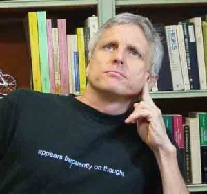

Structural-SystematicPhilosophy
Mark Hopkins Professor of Philosophy, Williams College
The philosopher & the projectWays into the philosophy

Alan White
Until 2003, my focus was on so-called continental philosophy; I published (among other things) Absolute Knowledge. Hegel and the Problem of Metaphysics (1983), Schelling. An Introduction to the System of Freedom (1983), and Within Nietzsche’s Labyrinth (1990). From Fall 2003 until his death in 2024, I collaborated with Lorenz B. Puntel (Professor Emeritus, Munich) on a systematic philosophy he had been working on since the late 1970s.
Four books
To date, the project has resulted in the publication of two books whose English versions are Structure and Being (2008) and Being and God (2011), both by Lorenz B. Puntel, both translated by and in collaboration with me, and a third book, by Lorenz B. Puntel and translated by me, Being and Nothing (2025). A fourth book, my Toward a Philosophical Theory of Everything. Contributions to the Structural-Systematic Philosophy, was published in 2014 (thanks to the title, it’s easy to refer to the book as TAPTOE).


Toward a Philosophical Theory of Everything
A review published in Choice in August 2014 describes it as “a critically important work for all those deeply interested in philosophical issues and their significance for basic human concerns,” notes that it includes an “incisive critique of theories of truth currently favored in analytic philosophy,” and adds that its “critiques of philosophical views on truth, knowledge, freedom, beauty, being, and God are carefully argued, and the discussions engage with current literature.” A Portuguese translation was published in Brazil. In the academic year 2015-16, a seminar at London University focused on TAPTOE’s “rearticulation of being” (https://germanphilosophy.wordpress.com/thinking-being-2015-2016/).
The image on the cover is from a painting by Williams Art Professor Barbara Takenaga; for obvious reasons, I am delighted that she allowed me to use it. Think how the book would look in your home or dorm room! Worth buying for the art alone!
Much-appreciated prepublication endorsements of TAPTOE (portions of which are included on the back cover) were provided by Professors Carlo Cellucci of La Sapienza University, Rome, Vincent Colapietro of Penn State University, Michael Baur of Fordham University, and John McCumber of UCLA.
“A critically important work for all those deeply interested in philosophical issues and their significance for basic human concerns.”Choice · August 2014
From the writing desk
William Desmond’s Metaxology on Being and Truth and the SSP
The structural-systematic philosophy (SSP) aims to be the best systematic philosophy currently available (see, e.g., White 2014, Toward a Philosophical Theory of Everything [henceforth, TAPTOE], p. 10). An available alternative appears to be the metaxology presented in various works by William Desmond. The blurb on the back cover of Desmond 1995 (Being and the Between) […]
Read essay 02 / ESSAY“A Partial History of My Work on Being with Lorenz B. Puntel”
A Partial History of My Work on Being with Lorenz B. Puntel
Read essay 03 / ESSAYStructure and Being corrigenda
SB corrigenda (formulated as instructions) replace square brackets with parentheses line 15 line 2 in second full paragraph: change “every utterance” to “every theoretical utterance”; line 3 change “every utterance” to “every assertion” three lines from bottom: remove extra space between aesthetic operator and x change “truth concept” to “truth-concept” line 8 from bottom: […]
Read essay